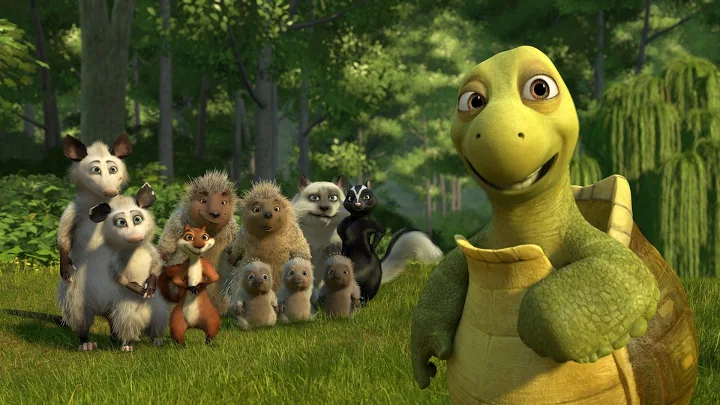

Over The Hedge
In Over The Hedge, a raccoon named RJ stumbles across a family of wild animals after he had a run in with a bear,
RJ plans to join the family of wild animals so he can use them to help him gather food to repay a hungry bear,
he plans to betray them after he gets the food, but has a change of heart when they work together to beat the bear,
an exterminator and a crazy lady. RJ’s change of heart doesn’t happen until the end of the movie,
but it is triggered when the bear shows RJ that his friends are getting captured by the exterminator.
